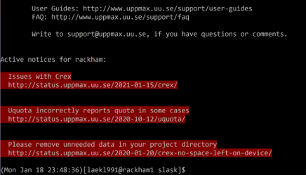

Basic toolkit

We will cover these commands
Read files and change file properties
cat print content on screen
head print first part
tail print last part
less browse content
tar compress or extract file
chmod change file permissions
man info about a command
Copy, Create, Move
mkdir — make directories
Make sure you’re in your home directory ($ cd ~)
$ mkdir uppmax-intro
Go in there:
$ cd uppmax-intro/
cp — copy files and directories
Copy files with: cp <source> <target>
Set target to "." to keep name and to point at present directory.
$ cp /proj/introtouppmax/labs/linux_tutorial/ .
Well, that didn’t work. What does the error say?
So... try
$ cp -r /proj/introtouppmax/labs/linux_tutorial/ .
-r is for recursive, meaning including files and subdirectories!
Move to your just created linux_tutorial/
$ cd linux_tutorial
Make a copy of the file “newfile” in the same directory:
$ cp newfile copyfile
scp —secure copy (remote file copy program)
Linux/MacOS: To copy data to/from Rackham, you can use scp from the terminal on your local machine:
Upload
[bob@macbook]$ scp myinput bob@rackham.uppmax.uu.se:~/copyofmyinput
[bob@macbook]$ scp myinput bob@rackham.uppmax.uu.se:~/ (keeping filename)
Download
[bob@macbook]$ scp bob@rackham.uppmax.uu.se:~/mydata copyofmydata
[bob@macbook]$ scp bob@rackham.uppmax.uu.se:~/mydata . (keeping file name)
mv — move/rename file
Moving files works just like copying files:
mv <source> <target>
Move the copy you just made to another place:
$ mv copyfile …/
Rename it.
$ mv …/copyfile …/renamedfile
Archiving
tar — archiving and compression
We’re going to need more files.
$ tar -vxzf files.tar.gz
The flags mean:
-verbosely
-extract
-zipped
-file
You should see a list of files being extracted
Deleting
rm — delete files or directories
Deleting files works just like copying or moving them:
rm <target>
Try it out:
$ rm …/renamedfile
$ rm this_is_empty
hmmmm...
rmdir — delete an empty directory
Need another command to delete directories
$ rmdir this_is_empty
$ rmdir this_has_a_file
Is there a way to use rm to delete directories?
Recursive commands are applied to directories and their contents
Help
man — manual, look up the right flags
Nobody can remember whether it’s -R or -r for recursive, or if -f lets you choose a file or forces an action.
$ man ls
shows you how to use ls and all its options
Type ‘/<keyword>’ to search for “<keyword>”, use ‘n’ and ‘N’ to scan through hits.
Scroll with arrows.
Type ‘q’ to quit.
Spend some time now to browse the man pages for the commands you’ve just learned!
Not only user commands!
Use sections like
man 2 write
MANUAL SECTIONS The standard sections of the manual include:
1 User Commands
2 System Calls
3 C Library Functions
4 Devices and Special Files
5 File Formats and Conventions
6 Games et. Al.
7 Miscellanea
8 System Administration tools and Deamons
Let’s get wild with Wildcards

$ ls many_files
$ ls many_files/*.txt
$ ls many_files/file_1*1.docx
Want to clean out temporary files ending in .tmp in all the subdirectories?
$ rm /.tmp
NB! It could be wise to do ls -a */*.tmp first to see what will be deleted...
Exercise: Create a new directory and move all .txt files in many_files to it.
Reading files
In Linux, you can (if you wish) also display files without being able to change them
$ cd old_project
$ ls
Hmm, which of these files are useful?
cat - concatenate files and print on the standard output
cat dumps the contents of files to the terminal as text
$ cat the_best
Yummy!
$ cat a
???
Concatenate files with this wizardry:
$ cat a the_best > combinedfiles.txt
head — display the top of a file
$ head a
You can choose how many lines to display (default 10)
$ head -n 4 a
tail — display the end of a file
Tail is the same as head, but for the other end.
$ tail -n 5 a
Handy to look at log files or to figure out the structure of a text file.
less — read a whole file
cat doesn’t really work for long files
$ less a
Search with ‘/keyword’ and ‘n’/’N’
Hit ‘q’ to quit.
scroll with arrows.
"man" uses "less"!
“less is more”
File permissions
Example
$ ls -l
drwxrwxr-x 2 marcusl marcusl 4096 Sep 19 2012 external_hdd
-rwxr-xr-x 1 marcusl marcusl 17198 Jul 16 14:12 files.tar.gz
Leading symbol:
d directory
regular file
l symbolic link (more on this tomorrow)
Others exist, but you can ignore them for now
$ ls -l drwxrwxr-x 2 marcusl marcusl 4096 Sep 19 2012 external_hdd -rwxr-xr-x 1 marcusl marcusl 17198 Jul 16 14:12 files.tar.gz
Three sets of “rwx” permissions
rwx: r ead, w rite, ex ecute
User: the user account that owns the file (usually the one that created it)
Group: the group that owns the file (usually the project group in /proj/xyz or the user’s group elsewhere
Others: everyone else on the system (literally a thousand strangers)
r – read
Files: Read the contents of the file
Directories: List the files in the directory
w – write
Files: Modify the file
Directories: Add, rename, or delete files in the directory
x – execute
Files: Run the file as a program
Directories: Traverse the directory (e.g. with “cd”)
Now try:
$ ls -l /proj/introtouppmax/
Huh, rwxrwsr-x?
‘s’ in the group means ‘x’ but with gid bit set ( g roup id of creator not launcher).
‘S’ means ‘-’ with gid bit set (rarely seen).
Among other things, this makes the default group for new files/subdirectories the g2020018 group.
Changing permissions
chmod — change file mode bits
Files with w can be modified and destroyed by accident. Protect your input data!
If you want to share data or scripts with a person not in your project (e.g. support staff like me), you can!
If you want to keep non-members from even seeing which files you have, you can!
chmod
can be e.g. u+x (let you run a script you just wrote)
–w (no write permissions for anyone)
g+rw (let group members read and edit this file)
g=xw (let group members go into your directory and put files there, but not see which files are there)
chmod takes flags as usual, e.g. -R for recursive (i.e. all files and sub-directories therein)
Online, you will come across e.g. “chmod 755”, what does this mean? It’s a “octal bit mask”:
7 = 4 + 2 + 1 = r + w + x
5 = 4 + 0 + 1 = r + x
Chmod — change file mode bits (man page)
What number would r+w be?
chmod — Hands-on
In the linux_tutorial directory, find important files and old saved data that you wouldn’t want to lose.
Directories: important_results/, old_project/
File: last_years_data
Use chmod to remove write permission from those files and directories (use the -R flag to also do the files in the directories).
Take a moment to play around with chmod and explore the effects of permissions on files and directories.
More about bash command line and scripts on Tuesday until Wednesday!